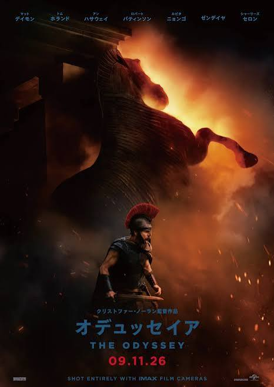
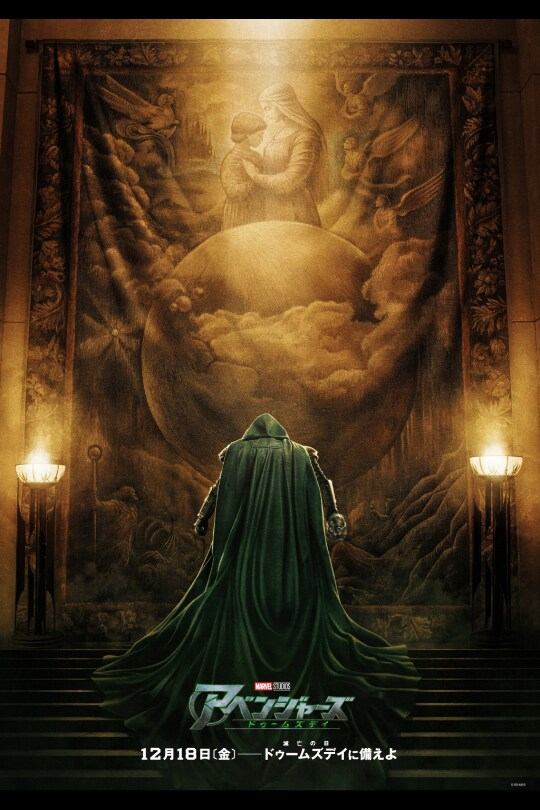
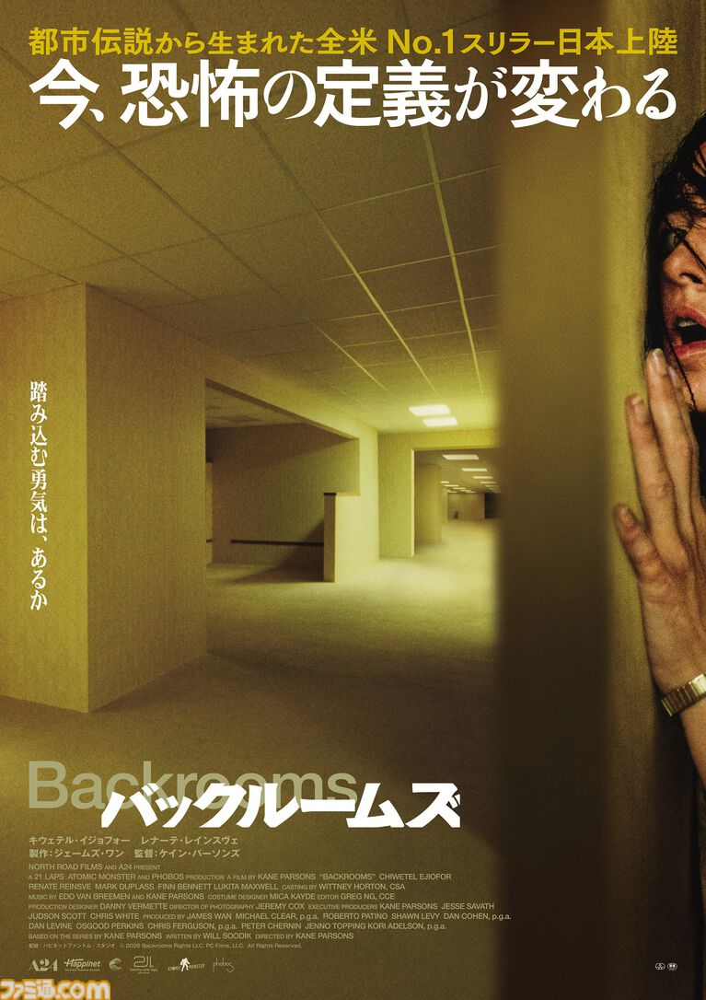
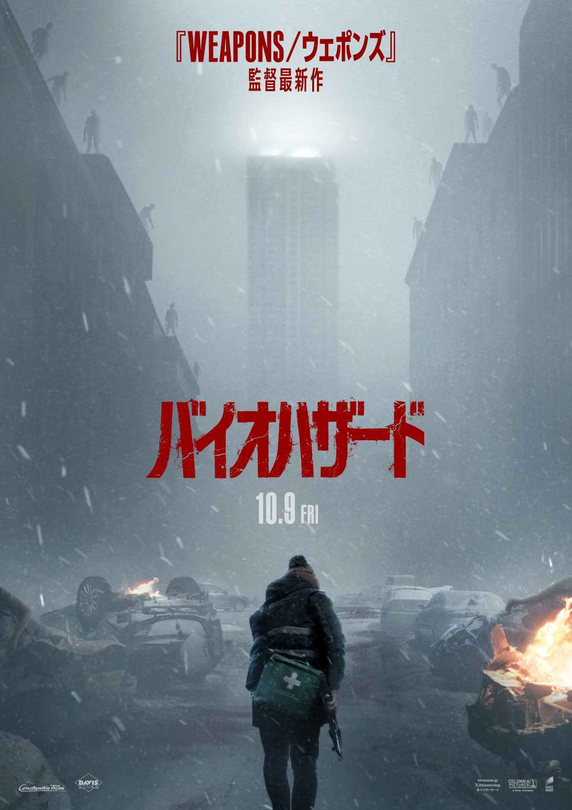
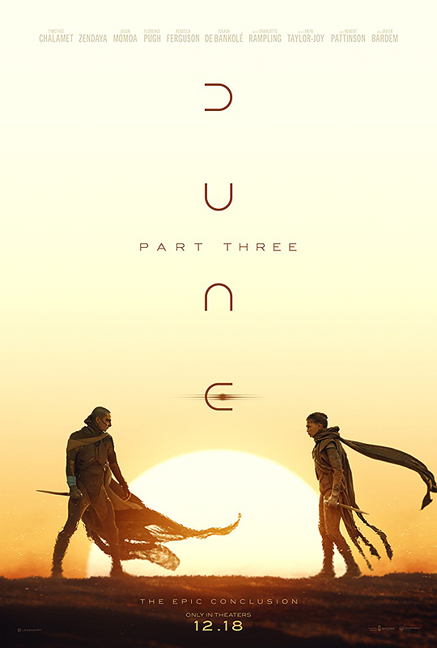
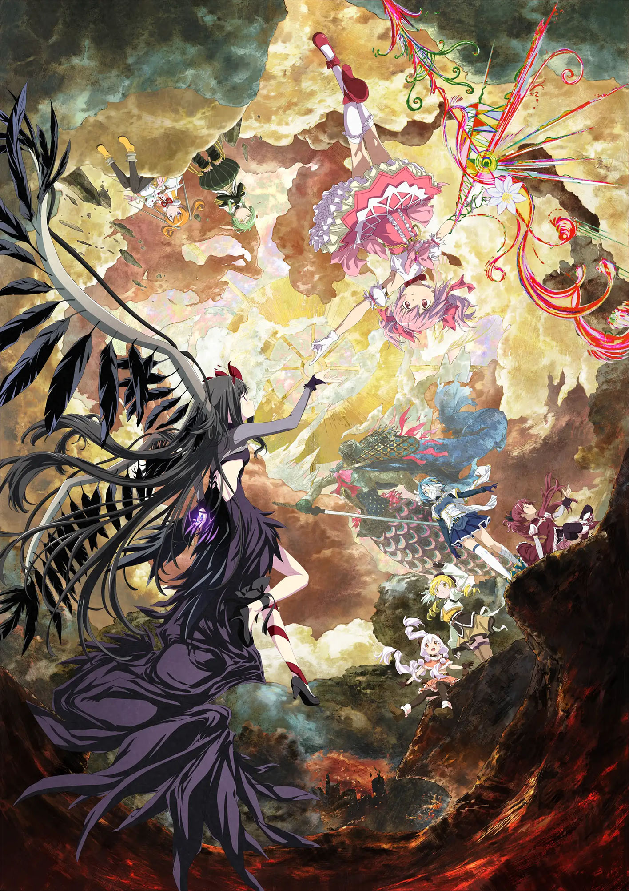
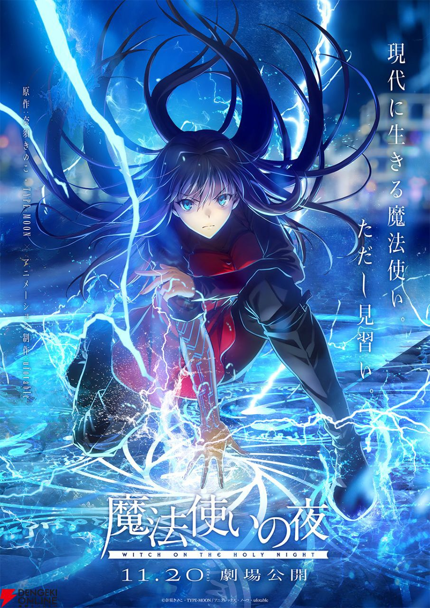

キングダム 魂の決戦
公開日:2026年7月17日
秦と趙、互いの国の未来を懸けた全面戦争がついに開幕。信が飛信隊を率いて強敵たちに挑むシリーズ最大級のスケールで描かれる決戦の物語。
予告編を見る2026年に公開のおすすめ映画を紹介するサイトです。
公開日:2026年7月17日
秦と趙、互いの国の未来を懸けた全面戦争がついに開幕。信が飛信隊を率いて強敵たちに挑むシリーズ最大級のスケールで描かれる決戦の物語。
予告編を見る公開日：2026年7月31日
世界から存在を忘れられたピーター・パーカーが孤独の中で新たな脅威に立ち向かうスパイダーマン新章。過去と向き合いながら、“親愛なる隣人”として再び立ち上がる姿を描く感動と興奮のアクション。
予告編を見る
公開日:2026年9月11日
トロイア戦争から帰還する英雄オデュッセウスが、神々や怪物との過酷な試練に挑む壮大な冒険譚。クリストファー・ノーラン監督が圧倒的な映像美で描く、神話スペクタクルの決定版。
予告編を見る
公開日：2026年12月18日
3つの世界のヒーローたちが集結し、全宇宙を揺るがす最強の敵・ドクター・ドゥームとの壮絶な戦いに挑む。アベンジャーズ、X-MEN、ファンタスティック・フォーが夢の共演を果たす、MCU史上最大級の超大作。
予告編を見る公開日:2026年7月17日
愛されたいという純粋な願いが、やがて制御不能な執着へと変わっていく新感覚ロマンティックホラー。禁断のまじないがもたらす“最愛”と“災愛”の恐ろしい変化を描く、予測不能の恐怖体験。
予告編を見る
公開日：2026年9月4日
ネット発の都市伝説「バックルーム」を、『SKIBIDI TOILET』で注目を集めたケイン・パーソンズが映像化。現実と異世界の境界が崩れた迷宮で、得体の知れない恐怖が迫る新感覚ホラー。
予告編を見る
公開日：2026年10月9日
ラクーンシティで謎のアウトブレイクに巻き込まれた青年が、生き残りを懸けて恐怖の一夜を駆け抜ける。ゲームの原点を思わせる緊張感とサバイバルホラーを描く、『バイオハザード』完全新作リブート。
予告編を見る公開日：2026年10月30日
人気俳優マット・ヘイゲンが悲劇をきっかけに、姿を自在に変える怪物「クレイフェイス」へと変貌していく。DC初の本格ボディホラーとして、“人間性の喪失”を描くダークで衝撃的なヴィラン誕生の物語。
予告編を見る公開日:2026年3月20日
地球滅亡の危機を救うため、記憶を失った宇宙飛行士が孤独な宇宙の旅に挑むSF大作。未知の生命体との出会いと科学の力で未来を切り開く、驚きと感動に満ちた壮大な宇宙ミステリー。
予告編を見る公開日:2026年5月1日
舞台は、異常気象などで崩壊寸前の世界。絶望する人々の前に突如現れたのは「チャールズ・クランツ 素晴らしい39年間！ありがとう、チャック！」という
大量の感謝広告――チャックとは一体誰なのか？ありがとうの意味とは―？
公開日:2026年10月1日
人類史上最大の秘密が明かされる日、
世界は未知なる存在との遭遇によって大きく揺れ動く。政府の隠された真実と宇宙規模の謎に迫る、スリル満点のスピルバーグ最新作。

公開日:2026年12月18日
砂の惑星アラキスを巡る壮大な戦いの中で、ポール・アトレイデスの運命と宇宙の未来が大きく動き出す。圧倒的な映像美と壮大なスケールで描かれる、SF映画史に残る叙事詩の完結編。
予告編を見る公開日:2026年2月27日
江戸・木挽町で起きた仇討ち事件の真相を追う中で、人々の過去と秘められた
想いが明らかになっていく時代ミステリー。
一つの事件が繋ぐ人間ドラマと驚きの真実を描く、心揺さぶる本格時代劇。
公開日:2026年5月8日
一見のどかな牧場で起こる不思議な事件を、個性豊かなひつじたちが解き明かしていく癒やし系ミステリー。 かわいらしさと本格的な謎解きが融合した、大人も子どもも楽しめる新感覚の探偵物語。
予告編を見る公開日:2026年5月22日
触れたものを消し去る謎の力を持つ“名前のない怪物”が巻き起こす、衝撃のサイコバイオレンス。佐藤二朗が原作・脚本・主演を務める、狂気と人間の孤独に迫る異色のダークスリラー。
予告編を見る公開日:2026年6月19日
戦国時代、城に閉じ込められた武将・荒木村重が、不可解な事件の謎に挑む歴史ミステリー。
知略と心理戦が交錯する、戦国の世を舞台にした極上の謎解きと
人間ドラマ。
公開日:2026年1月30日
鋭い直感と圧倒的な美貌で、連邦の「キルケー部隊」すら手玉にとり男たちの運命を翻弄する謎の美女、ギギ・アンダルシア。彼女の気まぐれな一言がハサウェイの決死の反乱を惑わせ、宇宙世紀史上最も切なく残酷な物語へと引きずり込んでいく。
予告編を見る公開日:2026年3月13日
20世紀初頭のパリ、画家を目指すフジコとバレエを追う薙刀術の遣い手・千鶴が、東洋人への偏見や過酷な試練に抗い夢へ挑む。谷口悟朗×近藤勝也×吉田玲子が描く、美しい街並みと魂を揺さぶる友情、そして泥臭くも圧倒的にドラマチックな青春群像劇！
予告編を見る
公開日：2026年8月28日
『叛逆の物語』のその先を描く、魔法少女たちの運命が再び動き出す劇場版最新作。ほむらとまどか、そして「ワルプルギスの夜」を巡る、シリーズ最大級の
戦いが幕を開ける。

公開日:2026年11月20日
現代の街に残る魔法と伝説を巡り、魔法使いたちの運命が交差していく幻想的な物語。美しい映像と緻密な世界観で描かれる、TYPE-MOONが贈る珠玉の魔法
ファンタジー。